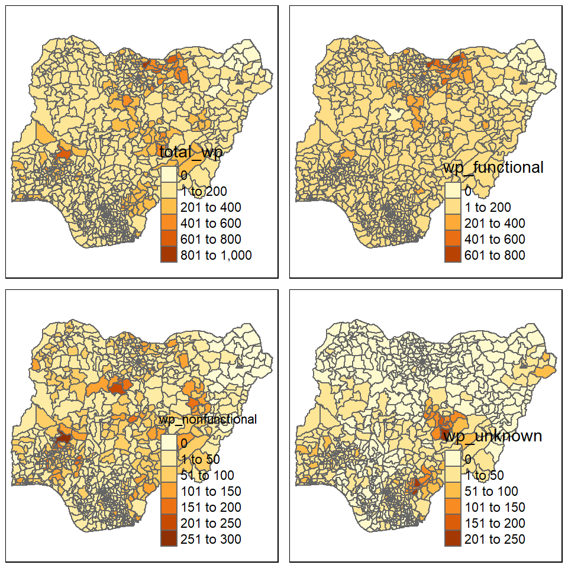
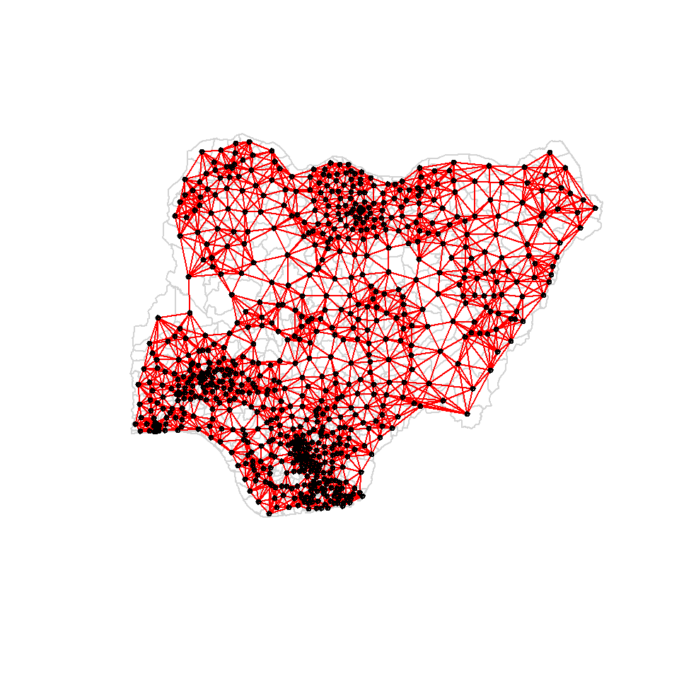

pacman::p_load(sf, tmap, tidyverse, spdep, funModeling)Take-home Exercise 1: Geospatial Analytics for Social Good
1 Overview
Access to safe water, sanitation and hygiene is the most basic human need for health and well-being. Despite efforts in raising the access to these basic services, according to the Sustainable Development Goals Report 2022 issued by the United Nations, by 2030, 1.6 billion people will lack safely managed drinking water, 2.8 billion people will lack safely managed sanitation, and 1.9 billion people will lack basic hand hygiene facilities.
To address the issue of providing clean and sustainable water supply to the rural community, a global Water Point Data Exchange (WPdx) project has been initiated. The main aim of this initiative is to collect water point related data from rural areas which then allows governments and their partners to make use of the data to improve decisions on a regular basis.
2 Objectives
Geospatial analytics offers a tremendous potential to solving societal problems. One such analytics is spatial autocorrelation which helps understand the degree to which one object is similar to its surrounding objects.
The objectives of this take-home exercise are as outlined in the following:
Using appropriate sf method, import the shapefile into R and save it in a simple feature data frame format. Any one of the three Projected Coordinate Systems of Nigeria, EPSG: 26391, 26392, and 26303 can be used.
Using appropriate tidyr and dplyr methods, derive the proportion of functional and non-functional water point at LGA level.
Combining the geospatial and aspatial data frame into simple feature data frame.
Performing outliers/clusters analysis by using appropriate local measures of spatial association methods.
Performing hotspot areas analysis by using appropriate local measures of spatial association methods.
3 The Data
In this exercise, we will analyse the data from Nigeria. There are 2 datasets used, as outlined in sections 3.1 and 3.2.
3.1 Aspatial Data
Data was downloaded from WPdx Global Data Repositories on 24 November 2022 in a csv format. The WPdx+ data set was filtered for “nigeria” in the column clean_country_name before downloading. There is a total of 95,08 unique water point records.
3.2 Geospatial Data
Nigeria Level-2 Administrative Boundary (also known as Local Government Area, LGA) polygon features GIS data was downloaded from geoBoundaries.
4 Getting the Data Into R Environment
4.1 Getting Started - Setting up the environment
In the following code chunk, p_load() from pacman package is used to install and load the following R packages into the R environment:
sf,
tidyverse,
tmap,
spdep, and
funModeling
4.2 Import Nigeria LGA boundary data into R environment
The following code chunk uses st_read() from sf package to import the geoboundaries shapefile into R and saves the imported geospatial data into a simple feature data table.
nga <- st_read(dsn = "geodata",
layer = "geoBoundaries-NGA-ADM2",
crs = 4326)
ngaThe above printout shows the data is in wgs84 geographic coordinate system. This is the required format as we will be using st_intersects() later which requires the data to be in wg84 coordinate system.
In the following, write_rds() of readr package is used to save the extracted sf data table into an output file in rds format. The following code chunk saves the output file in the geospatial folder.
write_rds(nga,
"geodata/nga.rds")4.3 Import csv file into R environment
We will use read_csv() to read the csv file as shown in the following code chunk.
wpd <- read_csv("geodata/wpdx_nigeria.csv")The two fields #lat_deg and #long_deg are in decimal degree format. We will then convert wpd data frame into a simple feature data frame by using the following code chunk and ensuring the data has the same wgs84 geographic coordinate system by specifying .
The two fields #lat_deg and #long_deg are in decimal degree format. As a best guess, we will assume that the data is in wgs84 Geographic Coordinate System (i.e. the Geodetic coordinate system for World). We will then convert wpd data frame in to a simple feature data frame by using the following code chunk. Note that for data conversion, longitude should be supplied as the first argument in coords which is then followed by the argument for latitude.
wpd_sf <- st_as_sf(wpd,
coords = c("#lon_deg", "#lat_deg"),
crs=4326)
wpd_sfFrom the printout above, we can see that the data is in the format that we want, i.e. wgs84.
Similarly, we will use write_rds() from readr package to save the extracted sf data frame into an output file in rds format. The following code chunk saves the output file in the geopatial folder.
write_rds(wpd_sf,
"geodata/wpd_nga.rds")4.4 Data Wrangling for Water Point Data
4.4.1 Recoding NA values into string
We will then load the data in rds format. In the following code chunk, we will also rename the column from #status_clean to status_clean for easier handling in subsequent steps. In addition, replace_na() is used to recode all the NA values in status_clean into unknown.
wp_nga <- read_rds("geodata/wpd_nga.rds") %>%
rename('status_clean' = '#status_clean') %>%
mutate(status_clean = replace_na(status_clean, "unknown"))4.4.2 EDA
freq(data = wp_nga,
input = 'status_clean')It can be observed that there are different classification within functional water points and within non-functional water points. We will create 2 separate dataframes each containing either type of functional water points.
4.5 Extracting Water Point Data
In this section, we will extract the water point records by using classes in status_clean field. In the following code chunks, filter() from dplyr is used to select functional water points.
wp_functional <- wp_nga %>%
filter(status_clean %in%
c("Functional",
"Functional but not in use",
"Functional but needs repair"))wp_nonfunctional <- wp_nga %>%
filter(status_clean %in%
c("Abandoned/Decommissioned",
"Abandoned",
"Non-Functional due to dry season",
"Non-Functional",
"Non functional due to dry season"))wp_unknown <- wp_nga %>%
filter(status_clean == "unknown")To check whether the filtering was performed correctly, we can run the following code chunks and reconcile the number of records with that in Section 4.4.2.
freq(data = wp_functional,
input = 'status_clean')freq(data = wp_nonfunctional,
input = 'status_clean')freq(data = wp_unknown,
input = 'status_clean')The output shows that filtering was performed successfully.
4.6 Performing Point-in-Polygon Count
Next, we want to find the number of functional water points in each LGA as well as the number of total, functional, non-functional, and unknown water points in each LGA. This is performed in the following code chunk. First, it identifies the functional water points in each LGA by using st_intersects(). Next, length() is used to calculate the number of functional water points that fall inside each LGA.
nga_wp <- nga %>%
mutate(`total_wp` = lengths(
st_intersects(nga, wp_nga))) %>%
mutate(`wp_functional` = lengths(
st_intersects(nga, wp_functional))) %>%
mutate(`wp_nonfunctional` = lengths(
st_intersects(nga, wp_nonfunctional))) %>%
mutate(`wp_unknown` = lengths(
st_intersects(nga, wp_unknown)))4.7 Saving the Analytical Data Table
We will tabulate the proportion of functional water points and the proportion of non-functional water points in each LGA. In the following code chunk, mutate() from dplyr package is used to derive two fields, namely pct_functional and pct_nonfunctional
nga_wp <- nga_wp %>%
mutate(pct_functional = wp_functional/total_wp) %>%
mutate(pct_non_functional = wp_nonfunctional/total_wp)Now that we have the tidy sf data table, we will save it in rds format for subsequent analysis.
write_rds(nga_wp, "geodata/nga_wp.rds")5 Visualising the Spatial Distribution of Waterpoints
We will visualise the spatial distribution of function and non-functional water points using a choropleth. This is performed using the code chunk below.
nga_wp <- read_rds("geodata/nga_wp.rds")
total <- qtm(nga_wp, "total_wp")
wp_functional <- qtm(nga_wp, "wp_functional")
wp_nonfunctional <- qtm(nga_wp, "wp_nonfunctional")
unknown <- qtm(nga_wp, "wp_unknown")
tmap_arrange(total, wp_functional, wp_nonfunctional, unknown, asp=1, ncol=2)
6 Global Spatial Autocorrelation
In this section, we will compute global spatial autocorrelation statistics and perform spatial complete randomness test for global spatial autocorrelation. Global spatial autocorrelation describes the presence of systematic spatial variation in a variable (in this case, proportion of functional water points and proportion of non-functional water points) in the study area (i.e. Nigeria) as a whole. We will evaluate two global spatial autocorrelation statistics - Moran’s I and Geary’s C.
6.1 Computing Contiguity Spatial Weights
We will first identify the spatial weights which is used to define the neighbourhood relationship between the geographical units.
There are 2 main approaches to compute the spatial weights, namely, the contiguity approach and the distance approach. In the contiguity approach, neighbours are identified to be geographical areas that share a common boundary. In the Rook’s criteria, areas need to have perfect shared boundary in order to be considered as neighbours, whereas for Queen’s criteria, areas that have either perfect shared boundary or diagonal shared boundary are considered as neighbours. However, in the case for Nigeria, we can observe that the LGAs are not approximately uniform. Using the contiguity approach may result in some LGAs to have more neighbours and some LGAs to have less neighbours - resulting in underestimating and overestimating the contributions of their neighbours respectively. As such, the contiguity approach is not suitable.
In the distance method, there are 2 approaches - (1) fixed distance approach where areas are identified to be neighbours if the distance between their centroids are within the fixed distance and (2) adaptive weighting scheme where shorter bandwidths (or distances) are used when data is dense and longer bandwidths for data that is sparse. One advantage of the adaptive distance weight scheme is that we can control the number of neighbours by using k-nearest neighbours. To use fixed distance, the regions should be of similar size so that the centroid represent each region well. Since the LGAs in Nigeria do not have similar sizes, fixed distance approach is not suitable. Another area where fixed distance works well is when there are very large polygons at the edge of the study area and very small polygons at the center, which again, is not observed for Nigeria. As such, we will use th adaptive weighting scheme.
6.1.1 Retrieving longitude and latutide of polygon centroids
We will first need to associate each polygon with a point in order to determine the nearest neighbours. The most typical method for this is the polygon centroids which gives us the longitude and the latitude of each LGA.
In the following code chunk, we use map_dbl() to transform the geometry of each LGA (represented by nga_wp$geometry) by applying the function st_centroid() to each LGA. We then access the longitude using [[1]].
longitude <- map_dbl(nga_wp$geometry, ~st_centroid(.x)[[1]])Likewise, we perform the following to access the latitude of the LGAs, this time using [[2]] to access the latitude.
latitude <- map_dbl(nga_wp$geometry, ~st_centroid(.x)[[2]])Now that we have latitude and longitude, we use cbind to put longitude and latitude into the same object.
coords <- cbind(longitude, latitude)We check the first few observations to see if things are formatted correctly.
head(coords) longitude latitude
[1,] 7.372450 5.113107
[2,] 7.352131 5.083219
[3,] 13.322900 13.428835
[4,] 6.847325 8.825812
[5,] 7.771541 5.022061
[6,] 8.219654 6.2598456.1.2 Computing adaptive distance weight matrix
In the following code chunk, we define k = 8 to find the k-nearest neighbours using knearineigh() and knn2nb() to return a list of integer vectors containing neighbour region number ids.
knn8 <- knn2nb(knearneigh(coords, k = 8))
knn8Neighbour list object:
Number of regions: 774
Number of nonzero links: 6192
Percentage nonzero weights: 1.033592
Average number of links: 8
Non-symmetric neighbours listThe following code chunk allows us to display the content of the mstrix using str().
str(knn8)List of 774
$ : int [1:8] 2 321 364 548 597 624 721 725
$ : int [1:8] 1 321 548 597 624 721 725 726
$ : int [1:8] 250 261 447 477 492 507 509 526
$ : int [1:8] 12 20 257 263 446 454 466 690
$ : int [1:8] 203 208 286 288 331 334 539 738
$ : int [1:8] 170 217 218 337 379 553 577 601
$ : int [1:8] 8 176 214 281 283 306 544 555
$ : int [1:8] 7 214 281 306 327 544 555 651
$ : int [1:8] 18 19 218 337 574 576 601 757
$ : int [1:8] 25 216 325 364 365 528 552 632
$ : int [1:8] 26 27 43 68 191 524 565 762
$ : int [1:8] 135 263 417 429 446 454 690 695
$ : int [1:8] 31 37 211 320 393 570 583 584
$ : int [1:8] 170 363 379 546 563 577 581 589
$ : int [1:8] 22 49 82 177 297 306 580 623
$ : int [1:8] 30 187 188 296 328 357 360 635
$ : int [1:8] 35 275 295 378 460 591 638 639
$ : int [1:8] 9 19 218 376 574 576 601 757
$ : int [1:8] 9 18 56 103 376 574 576 601
$ : int [1:8] 4 106 125 239 263 419 454 466
$ : int [1:8] 60 61 162 269 520 578 596 626
$ : int [1:8] 49 297 326 443 515 623 682 693
$ : int [1:8] 54 291 292 536 537 614 618 619
$ : int [1:8] 84 123 437 476 527 652 673 761
$ : int [1:8] 10 181 216 314 325 366 552 730
$ : int [1:8] 11 27 68 191 336 439 562 762
$ : int [1:8] 11 26 191 439 562 565 663 762
$ : int [1:8] 29 178 299 300 301 358 369 598
$ : int [1:8] 172 173 178 182 358 378 460 591
$ : int [1:8] 16 39 41 186 192 329 357 360
$ : int [1:8] 13 37 211 289 561 570 583 584
$ : int [1:8] 51 62 461 462 515 623 682 693
$ : int [1:8] 47 166 227 238 242 655 743 750
$ : int [1:8] 42 104 136 137 213 553 559 757
$ : int [1:8] 17 275 276 277 278 279 295 460
$ : int [1:8] 50 107 247 408 432 455 681 759
$ : int [1:8] 38 40 211 212 570 583 584 629
$ : int [1:8] 30 39 40 41 186 192 320 570
$ : int [1:8] 30 38 40 41 186 192 320 329
$ : int [1:8] 37 38 39 41 186 192 320 570
$ : int [1:8] 30 38 39 40 186 192 360 634
$ : int [1:8] 86 136 137 499 587 613 718 734
$ : int [1:8] 11 68 157 524 549 565 590 645
$ : int [1:8] 16 45 192 290 303 328 360 634
$ : int [1:8] 44 187 290 303 328 341 360 599
$ : int [1:8] 387 417 429 438 459 521 668 742
$ : int [1:8] 33 111 166 234 238 691 698 750
$ : int [1:8] 65 113 265 386 407 428 482 701
$ : int [1:8] 22 32 297 326 515 623 682 693
$ : int [1:8] 36 98 107 247 409 416 432 681
$ : int [1:8] 32 62 461 462 515 580 623 693
$ : int [1:8] 53 78 165 293 532 602 603 636
$ : int [1:8] 52 78 80 165 280 602 621 636
$ : int [1:8] 23 79 293 294 532 536 537 618
$ : int [1:8] 122 169 246 333 430 571 605 697
$ : int [1:8] 77 368 376 533 534 576 601 728
$ : int [1:8] 53 58 199 312 322 323 621 622
$ : int [1:8] 57 322 323 564 602 603 621 622
$ : int [1:8] 88 128 129 259 493 700 714 748
$ : int [1:8] 61 158 563 578 589 592 596 626
$ : int [1:8] 21 60 269 578 589 592 596 626
$ : int [1:8] 32 51 461 462 515 623 682 693
$ : int [1:8] 90 237 384 416 467 497 765 772
$ : int [1:8] 48 65 74 113 131 265 386 407
$ : int [1:8] 48 64 74 113 265 407 683 701
$ : int [1:8] 19 103 104 288 331 338 351 574
$ : int [1:8] 347 348 560 566 567 609 640 694
$ : int [1:8] 11 43 157 190 191 549 590 645
$ : int [1:8] 140 146 248 274 473 500 512 513
$ : int [1:8] 71 298 299 301 341 343 344 610
$ : int [1:8] 70 172 173 298 299 343 344 625
$ : int [1:8] 17 361 566 567 568 609 638 639
$ : int [1:8] 72 361 374 377 404 607 665 666
$ : int [1:8] 65 109 113 251 265 683 741 754
$ : int [1:8] 110 272 398 422 433 485 501 768
$ : int [1:8] 254 287 427 459 470 547 647 677
$ : int [1:8] 56 195 533 534 579 618 619 728
$ : int [1:8] 52 54 79 80 165 215 532 636
$ : int [1:8] 54 78 165 293 532 579 618 636
$ : int [1:8] 52 53 78 165 215 280 636 739
$ : int [1:8] 99 145 227 233 426 483 689 760
$ : int [1:8] 15 32 49 51 177 352 580 623
$ : int [1:8] 132 258 383 414 433 529 767 768
$ : int [1:8] 24 131 148 386 437 482 673 692
$ : int [1:8] 105 156 267 394 654 675 707 712
$ : int [1:8] 42 136 137 499 587 613 718 734
$ : int [1:8] 149 151 221 226 399 410 486 657
$ : int [1:8] 59 116 128 150 489 648 700 714
$ : int [1:8] 260 408 463 542 674 676 681 759
$ : int [1:8] 63 163 236 237 384 452 710 765
$ : int [1:8] 160 271 388 406 473 475 492 525
$ : int [1:8] 95 119 390 391 392 423 487 656
$ : int [1:8] 73 354 374 402 594 607 665 666
$ : int [1:8] 13 31 60 158 436 561 596 709
$ : int [1:8] 92 390 391 392 405 423 469 656
$ : int [1:8] 97 139 389 403 420 451 488 653
$ : int [1:8] 96 168 389 420 451 653 662 773
$ : int [1:8] 50 117 153 231 409 432 696 708
$ : int [1:8] 81 145 426 483 667 689 760 769
[list output truncated]
- attr(*, "region.id")= chr [1:774] "1" "2" "3" "4" ...
- attr(*, "call")= language knearneigh(x = coords, k = 8)
- attr(*, "sym")= logi FALSE
- attr(*, "type")= chr "knn"
- attr(*, "knn-k")= num 8
- attr(*, "class")= chr "nb"We can visualise the weight matrix using the code chunk below.
plot(nga_wp$geometry, border = "lightgrey")
plot(knn8, coords, pch = 10, cex = 0.5, add = TRUE, col = "red")
6.1.3 Binary weights matrix
Next, we will assign weights to each neighboring polygon by using the basic binary coding.
In the following code chunk, the input of nb2listw() must be an object of class nb. The syntax of the function has two major arguments, namely style and zero.poly.
We defined style = “B” which is binary coding assignment where neighbours are given a value of 1 and non-neighbours are given a value of 0.
If zero policy is set to TRUE, weights vectors of zero length are inserted for regions without neighbour in the neighbours list.
bwm <- nb2listw(knn8,
style = "B",
zero.policy = TRUE)
bwmCharacteristics of weights list object:
Neighbour list object:
Number of regions: 774
Number of nonzero links: 6192
Percentage nonzero weights: 1.033592
Average number of links: 8
Non-symmetric neighbours list
Weights style: B
Weights constants summary:
n nn S0 S1 S2
B 774 599076 6192 11152 2019426.2 Global Spatial Autocorrelation: Moran’s I
In this section, we will demonstrate how to perform Moran’s I statistics testing by using moran.test() of spdep. Moran’s I is a test for spatial autocorrelation. It measures the overall spatial autocorrelation of the data, i.e. overall, how one object is similar or dissimilar to others surrounding it, evaluating whether the observation (in our case, values for the proportion of non-functional water points) is clustered, dispersed, or random.
The values of Moran’s I range from +1 meaning strong positive spatial autocorrelation (clustering) to 0 meaning a random pattern to -1 indicating strong negative spatial autocorrelation (dispersion).
6.2.1 Moran’s I test
The null hypothesis we are testing states that “The values for the proportion of non-functional water points are randomly distributed across counties, following a completely random process”. The alternative hypothesis is”The values for the proportion of non-functional water points is not randomly dispersed, i.e. it is clustered in noticeable patterns”.
The following code chunk performs Moran’s I statistic test using moran.test() of spdep.
moran.test(nga_wp$pct_non_functional,
listw = bwm,
zero.policy = TRUE,
na.action = na.omit)
Moran I test under randomisation
data: nga_wp$pct_non_functional
weights: bwm
omitted: 3, 86, 241, 250, 252, 261, 400, 406, 447, 473, 492, 507, 526
Moran I statistic standard deviate = 25.691, p-value < 2.2e-16
alternative hypothesis: greater
sample estimates:
Moran I statistic Expectation Variance
0.4397713487 -0.0013157895 0.0002947791 Since p-value is very small, < 0.05 (statistically significant) and the Moran I statistic (0.43977) is positive, we reject the null hypothesis and conclude that the values for the proportion of non-functional water points is spatially clustered.
6.2.2 Computing Monte Carlo Moran’s I
The Moran’s I analysis benefits from being fast. But it may be sensitive to irregularly distributed polygons. A safer approach to hypothesis testing is to run a Monte Carlo simulation using the moran.mc() function. The moran.mc function takes an extra argument n, the number of simulations.
The code chunk below performs permutation test for Moran’s I statistic by using moran.mc() of spdep. A total of 1000 simulation will be performed.
set.seed(1234)
bperm = moran.mc(nga_wp$pct_non_functional,
listw = bwm,
nsim = 999,
zero.policy = TRUE,
na.action = na.omit)
bperm
Monte-Carlo simulation of Moran I
data: nga_wp$pct_non_functional
weights: bwm
omitted: 3, 86, 241, 250, 252, 261, 400, 406, 447, 473, 492, 507, 526
number of simulations + 1: 1000
statistic = 0.43977, observed rank = 1000, p-value = 0.001
alternative hypothesis: greaterThe Monte Carlo simulation generates a very small p-value, i.e. < 0.05 (thus statistically significant). Again, we can reject the null hypothesis and conclude that overall, the values for the proportion of non-functional water points is spatially clustered.
6.2.3 Visualising Monte Carlo Moran’s I
To examine the simulated Moran’s I test statistics in greater detail, we can plot the distribution of the statistical values as a histogram by using the following code chunk.
hist(bperm$res,
freq = TRUE,
breaks = 50,
xlab = "Simulated Moran's I",
main = "Histogram of Monte Carlo Simulation of Moran's I")
abline(v=0,
col="red")
abline(v=0.44,
col="blue")
text(0.37, 180, "Moran's I value = 0.44", cex = 0.8, col='blue')
The Moran’s I value (represented by the blue vertical line) is far outside the simulated data (grey shaded region) which indicates a statistically significant relationship. [1]
6.3 Global Spatial Autocorrealtion: Geary’s C
Geary’s C is a measure of spatial autocorrelation or an attempt to determine if adjacent observations of the same phenomenon are correlated. How this differs from Moran’s I is that in general, Moran’s I is a measure of global spatial autocorrelation, while Geary’s C is more sensitive to local spatial autocorrelation. Geary’s C is also known as Geary’s contiguity ratio or simply Geary’s ratio.
A Geary’s C statistic close to 1 indicates that there is no significant autocorrelation between observation i and its neighbors, where Geary’s C statistic < 1 indicates that the observation has neighbors which are significantly similar to it (positive spatial autocorrelation). Likewise, Geary’s C statistic > 1, demonstrates that the observation is among neighbors which differ significantly from it (negative spatial autocorrelation). [2]
6.3.1 Geary’s C test
In Geary’s C test, we define the null hypothesis “There is no association between the values for the proportion of non-functional water points observed at a location and values observed at nearby LGAs”. The alternative hypothesis is “Nearby sites have either similar or dissimilar values for the proportion of non-functional water points”. The code chunk below perform Geary’s C test for spatial autocorrelation by using geary.test() from spdep.
geary.test(nga_wp$pct_non_functional,
listw = bwm,
zero.policy = TRUE)6.3.2 Computing Monte Carlo Geary’s C
6.3.3 Visualising the Monte Carlo Geary’s C
6.4 Spatial Correlogram
Spatial correlograms are great to examine patterns of spatial autocorrelation in the data or model residuals. They show how correlated are pairs of spatial observations as the distance (lag) between them increases - they are plots of some index of autocorrelation (Moran’s I) against distance. Spatial correlograms serve as very useful exploratory and descriptive tool.
6.4.1 Compute Moran’s I correlogram
In the following code chunk, sp.correlogram() of spdep package is used to compute a 6-lag spatial correlogram of GDPPC. The global spatial autocorrelation used in Moran’s I. The plot() of base Graph is then used to plot the output.
MI_corr <- sp.correlogram(knn8,
nga_wp$pct_non_functional,
order = 6,
method = "I",
style = "B")
plot(MI_corr)7 Local Spatial Autocorrelation
The Cluster and Outlier Analysis (Anselin Local Moran’s I) tool identifies concentrations of high values, concentrations of low values, and spatial outliers. [3] It can help to answer questions such as:
Where are the sharpest boundaries between LGA with high proportion of non-functional water points and LGA with low proportion of non-functional water points?
Are there locations where there is a high number of LGAs with high proportion of non-functional water points?
A positive value for I indicates that a feature has neighboring features with similarly high or low attribute values; this feature is part of a cluster. A negative value for I indicates that a feature has neighboring features with dissimilar values; this feature is an outlier. In either instance, the p-value for the feature must be small enough for the cluster or outlier to be considered statistically significant.
7.1 Computing local Moran’s I
To compute local Moran’s I, the localmoran() function of spdep will be used. It computes Ii values, given a set of zi values and a listw object providing neighbour weighting information for the polygon associated with the zi values.
The code chunks below are used to compute local Moran’s I of values for proportion of non-functional water points at the LGA level.
fips <- order(nga_wp$shapeName)
localMI <- localmoran(nga_wp$pct_non_functional, bwm)
head(localMI)The code chunk below list the content of the local Moran matrix derived by using printCoefmat().
printCoefmat(data.frame(localMI[fips,], row.names=hunan$County[fips]), check.names=FALSE)Reference: